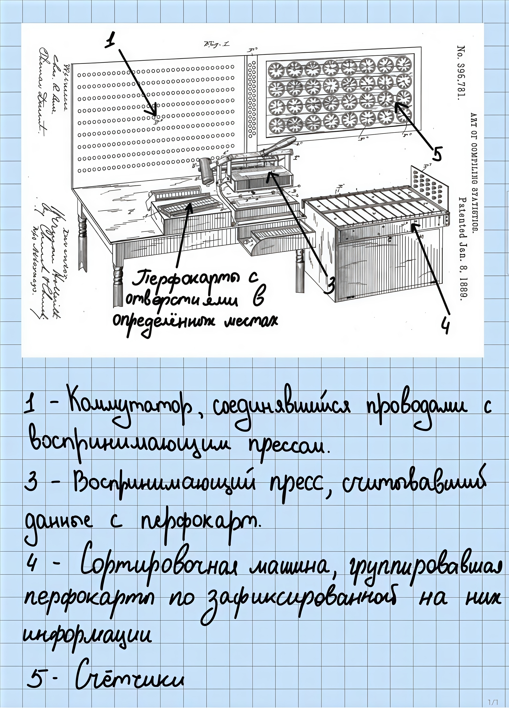

Алгоритм сортировки – это последовательность действий для сортировки элементов некоторого множества по определенному признаку. Если вдуматься, то несложно понять, что на самом деле простейшие алгоритмы сортировки существовали задолго до появления электрических табулирующих систем и электронно-вычислительных машин (далее ЭВМ) – уже во II тысячелетии до н. э. люди наносили на кувшины для перевозки вина информацию о месте сбора винограда, его сорте, вкусе, возрасте вина и месте производства, упрощая таким образом сортировку кувшинов при их перевозке и продаже. До второй промышленной революции проблема алгоритмов сортировки формулировалась как потребность в упрощении процесса сортировки, производимого непосредственно человеком. С развитием техники человек из «исполнителя» превращается в того, кто дает задание, обеспечивает условия для его выполнения, и задача сортировки разбивается на две:
Поскольку нашей темой являются методы сортировки конкретно в контексте программирования и компьютерных наук, рассмотрим подробнее их эволюцию, начиная с изобретения первого устройства, работа которого основывалась на том, что сегодня мы называем алгоритмом сортировки. Для удобства выделим пять этапов.
Важное практическое значение проблема сортировки данных в больших массивах впервые приобрела в XIX веке в США...
Начало следующего этапа (1940-е – 1950-е гг.) ознаменовано появлением первых ЭВМ...
Третий этап начался в 1950-х годах с появления ЭВМ второго поколения и продолжался до середины 1970-х годов...
Появление вычислительных центров, объединяющих мощности отдельных вычислительных машин и позволяющих работать с разделением времени потребовало разработки новых алгоритмов сортировки и модификации существующих...
Пятый этап начался с середины 1990-х гг. и продолжается по настоящее время...
I. Важное практическое значение проблема сортировки данных в больших массивах впервые приобрела в XIX веке в США, где в 1840 году был создан центральный офис переписи населения, в котором обрабатывались первичные данные из всех штатов. В ходе переписи было опрошено более 17 млн человек, и каждая анкета состояла из 13 вопросов. Объем полученных данных был настолько велик, что их обработка традиционным «ручным» способом заняла слишком длительное время. Подобные переписи проводились каждые десять лет и вследствие роста населения времени требовалось все больше и больше – в 1880 году было опрошено уже более 50 млн человек, а обработка данных потребовала привлечения сотен служащих и семи с половиной лет. Очевидно, в реалиях демографического подъема было абсолютно бесперспективно оставлять все как есть – финансовые и временные затраты грозили стать непомерными. Поэтому перед переписью 1890 года был проведен конкурс на лучшее электромеханическое сортировочное устройство, которое упростило и удешевило бы процесс обработки данных. Конкурс выиграл инженер и изобретатель Герман Холлерит, разработавший первый в мире статистический табулятор.
Табулятор Холлерита – электромеханическая машина, предназначенная для автоматической обработки информации, записанной на перфокартах (карточки из тонкого картона, наличие или отсутствие отверстий в определенных местах которых передает ту или иную информацию), являвшихся аналогом железнодорожных билетов, по отверстиям на которых кондукторы также могли узнать необходимые сведения о путешественнике, например, о его поле и приблизительном возрасте.
Работа сортировальной машины Холлерита основывалась на методах поразрядной сортировки. В патенте на машину обозначена сортировка «по отдельности для каждого столбца», но не определён порядок. В другой аналогичной машине, запатентованной в 1894 году Джоном Гором, упоминается сортировка со столбца десятков. Метод сортировки, начиная со столбца единиц, впервые появляется в литературе в конце 1930-х годов. К этому времени сортировальные машины уже позволяли обрабатывать до 400 карт в минуту.

II. Начало следующего этапа (1940-е – 1950-е гг.) ознаменовано появлением первых ЭВМ. В 1946 году американский инженер и физик Джон Уильям Мочли опубликовал первую статью об алгоритмах сортировки «Теория и технология сортировки», в которой систематизировал и проанализировал уже использовавшиеся методы сортировки и предложил их теоретические основы. Если говорить конкретнее, то Джон Мочли в своей работе сделал особый акцент на поразрядную сортировку (Radix sort), дал ей строгое математическое описание, а также рассмотрел сортировку выбором (selection sort) и сортировку обменом (Exchange sort) и метод бинарных вставок. Статья Мочли стала одним из ключевых событий этого периода, поскольку в ней он впервые рассмотрел сортировку не как рутинную операцию с картами, а как вычислительную проблему, требующую математического анализа, а также ввел термины «сортировка» (sorting) и «сортировщик» в том значении, в котором мы используем их сегодня.
Следствием перехода к сортировке данных с помощью ЭВМ стало разделение сортировки на два типа – внешнюю и внутреннюю. До середины 1950-х гг. наиболее распространенными были модификации сортировки слиянием и вставками сложности О(n log n) для n элементов.
III. Третий этап начался в 1950-х годах с появления ЭВМ второго поколения и продолжался до середины 1970-х годов.
В 1959 г. Дональд Левис Шелл предложил метод сортировки с убывающим шагом, более известную как «сортировка Шелла» (shell sort), в 1960 г. Чарльз Энтони Ричард Хоар – метод быстрой сортировки (quicksort), в 1964 г. Дж. У. Дж. Уильямс – метод пирамидальной сортировки (heapsort). Многие из разработанных в этот период алгоритмов (например, быстрая сортировка Хоара) широко используются до настоящего времени.
Итоги этого этапа активного развития алгоритмов сортировки подвел в 1973 г. Дональд Эрвин Кнут (Donald Ervin Knuth) в третьем томе своей фундаментальной монографии «Искусство программирования» («The Art of Computer Programming»), в котором разделил алгоритмы сортировки на три группы: сравнительные сортировки (сортировка вставками, пузырьковая, выбором, Шелла, быстрая сортировка (Quicksort), пирамидальная (Heapsort), слиянием (Mergesort) (как внутренняя сортировка)); цифровые и распределяющие сортировки (поразрядная сортировка (Radix Sort), блочная (Bucket Sort)); оптимальные и гибридные методы (слиянием (Mergesort) (как внешняя сортировка), сортировка списков), и подробно рассмотрел все группы и проанализировал алгоритмы с математической точки зрения – оценил среднюю и худшую временные сложности (Кнут был первым, кто популяризовал «нотацию О большое» (Notation Big O) для определения эффективности алгоритмов сортировки), требования к памяти и устойчивость.
К началу 1970-х гг. активно использовались методы внутренней сортировки и разрабатывались методы внешней сортировки.
IV. Четвертый этап продолжался с середины 1970-х гг. до середины 1990-х гг. Появление вычислительных центров, объединяющих мощности отдельных вычислительных машин и позволяющих работать с разделением времени потребовало разработки новых алгоритмов сортировки и модификации существующих. Началось исследование задач сортировки в классе параллельных алгоритмов, были достигнуты значительные успехи в увеличении скорости сортировки за счет повышения эффективности уже известных к тому времени алгоритмов путем их доработки или комбинирования. Например, нидерландский ученый Эдсгер Вайб Дейкстра (Edsger Wybe Dijkstra) в 1981 г. предложил алгоритм плавной сортировки (Smooth sort), который является развитием пирамидальной сортировки (Heapsort). Одновременно происходил поиск оптимальных входных последовательностей для разных методов сортировки, что позволяло значительно сократить их время. Еще одним направлением, наиболее интенсивно развивающимся, было решение задачи сортировки в классе параллельных алгоритмов, для чего не только обобщались ранее известные парадигмы, но и разрабатывались принципиально новые алгоритмы. Развитие данного направления стимулировалось и все более широким использованием сортирующих сетей, а также многомерных вычислительных решеток.
V. Пятый этап начался с середины 1990-х гг. и продолжается по настоящее время. Особую актуальность получило исследование задач сортировки на частично упорядоченных множествах. Актуальность этих задач объясняется появлением и широким распространением компьютеров на сверхсложных микропроцессорах с параллельно-векторной структурой, а также высокоэффективных сетевых компьютерных систем.
Учитывая существующее на сегодняшний день многообразие алгоритмов сортировки, очевидно, что если для решения некоторой задачи применим один алгоритм, то можно придумать и много других алгоритмов для решения этой же задачи.
Однако тогда возникает вопрос, какой из этих алгоритмов следует выбрать, чтобы он удовлетворил требованию максимально высокой эффективности, которое мы выдвинули, когда формулировали задачу сортировки. Чтобы ответить на этот вопрос, введем понятие сложности алгоритма.
В общем значении сложность – это оценка эффективности алгоритма по некоторому признаку.
Выделяется временная и пространственная сложности алгоритмов. Рассмотрим каждую из них.
I. Временная сложность – это функция от размера входных данных, определяющая количество элементарных операций, требующихся для выполнения алгоритма при данном входе.
Не стоит путать временную сложность со временем выполнения алгоритма – точным значением времени, которое требуется для выполнения алгоритма, определенное для конкретных входных данных и конкретного гаджета.
Временная сложность имеет вследствие своей «универсальности» более широкую область применения, хотя в некоторых задачах удобен и прямой подсчет времени выполнения при помощи встроенных в языке программирования функций (например, таких как модуль time в Python, clock() в C++)
II. Пространственная сложность – это функция от размера входных данных, описывающая необходимый для выполнения данного алгоритма объем памяти при данном входе.
Мы сформулировали определения понятий временной и пространственной сложностей. Теперь следует разобраться, как они вычисляются.
Если алгоритм выполняется за 0.1 секунду при входных данных в виде 100 элементов – это мало о чем говорит при работе с серьезными программами, которые ежедневно обрабатывают тысячи запросов. Важно понимать, как будет вести себя функция, если многократно увеличить размер входных данных без привязки к деталям. Для этого используются асимптотические нотации, показывающие конкретно скорость роста функции.
Изучение изменения производительности алгоритма с изменением порядка размера входных данных определяется как асимптотический анализ – метод описания предельного поведения чего-либо, в данном случае алгоритмов.
Асимптотические нотации – это формальный математический способ описания поведения функций при аргументе, стремящемся к бесконечности.
Выделим два свойства асимптотических нотаций, подчеркивающих их логику оценки функций – описания поведения, а не точного значения.
Самой известной и наиболее часто используемой является нотация «О большое» (Big O notation). Она является частью семейства обозначений, введенных немецкими математиками Паулем Бахманом и Эдмундом Ландау, которые также называются «нотации Бахмана-Ландау».
Впервые понятие Big O notation было введено Паулем Бахманом во втором томе его книги «Analytische Zahlentheorie» (Аналитическая теория чисел), вышедшем в свет в 1894 году. Именно такое название нотации было выбрано Бахманом не случайно, O – первая буква немецкого слова «Ordnung», в переводе обозначающего «порядок».
В начале XX века другой немецкий математик, Эдмунд Ландау, занялся популяризацией Big O notation и ввел собственные нотации – little o notation (нотацию «о малое»), little ω notation (нотацию «омега малая»), Big Ω notation (нотацию «Омега большая»), Big Θ notation (нотацию «Тета большая»), из-за чего эти обозначения также называют «символами Ландау».
В контексте же определения сложностей алгоритмов асимптотические нотации начали применяться с подачи Дональда Кнута в 1970-х годах. Именно Кнут в серии своих книг «Искусство программирования» («The Art of Computer Programming») предложил перейти от абстрактных понятий «быстрый», «медленный» к строгой оценке эффективности алгоритмов.
I. Big O notation. Нотация «О большое» - обозначение для оценки верхней границы (наихудшего случая) временной или пространственной сложностей алгоритма.
Именно эта нотация наиболее часто применяется на практике – например, при разработке приложений и сайтов общего доступа, предполагающих большие охваты (таких как Facebook, Twitter – ими ежедневно пользуются десятки миллионов людей), необходимо знать временные и пространственные сложности алгоритмов, на которых основывается код, чтобы избежать излишне медленной работы ресурса.
Рассмотрим основные виды Big O notation (на примере временной сложности):
#include <iostream>
int example(int inputData);
int inp = 0;
int main(){
std::cin >> inp;
example(inp);
return 0;
}
int example(int inputData) {
for(int i = 0; i < 10; i++) {
std::cout << i;
}
}
В приведенном выше фрагменте кода продемонстрирован алгоритм, при выполнении которого временная сложность является константной – время выполнения программы не зависит от размера входных данных.
#include <iostream>
int example(int inputData);
int inp = 0;
int main(){
std::cin >> inp;
example(inp);
return 0;
}
int example(int inputData) {
for(int i = 0; i <= inputData; i*=2) {
std::cout << i;
}
}
Изменив условия работы цикла for, мы получаем алгоритм с логарифмической временной сложностью. Значение i будет расти следующим образом: 1, 2, 4, 8… (т. е. каждый раз будет увеличиваться в 2 раза; также можно записать как: 20, 21, 22, 23...). Следовательно, количество операций будет примерно равно: log2(inputData) или log2(n).
#include <iostream>
int example(int inputData);
int inp = 0;
int main(){
std::cin >> inp;
example(inp);
return 0;
}
int example(int inputData) {
for(int i = 0; i < 2*inputData; i++) {
std::cout << i;
}
}
В этом фрагменте кода количество элементарных операций зависит от входных данных линейно. Отсюда – временная сложность линейная.
Обратим также внимание на то, что в условии цикла используется не просто inputData (n), а 2*inputData (т. е. 2n), однако сложность обозначается O (n), а не O (2n).
В этом примере наглядно видно одно из свойств асимптотических нотаций – игнорирование констант. И правда, если подходить к вопросу с математической точки зрения, то графиками обеих функций (обозначим их как f(x) = x; g(x) = 2x) будет являться прямая, а значит поведение, играющее, собственно, определяющую роль в оценке функций асимптотическими нотациями, у них одинаково.
Это такая временная сложность, при которой выполняется n операций, и для каждой из этих n операций выполняется еще log n операций. Очевидно, что такую сложность будут иметь алгоритмы со вложенными циклами (а также рекурсивные алгоритмы, например сортировка слиянием или Merge sort).
#include <iostream>
int example(int inputData);
int inp = 0;
int main(){
std::cin >> inp;
example(inp);
return 0;
}
int example(int inputData) {
for(int i = 0; i < inputData; i++) {
for(int j = 1; j <= inputData; j*=2){
std::cout << i;
}
}
}
Наиболее наглядными примерами алгоритмов, имеющих такую сложность, будут алгоритмы с m вложенными циклами.
#include <iostream>
int example(int inputData);
int inp = 0;
int main(){
std::cin >> inp;
example(inp);
return 0;
}
int example(int inputData) {
for(int i = 0; i < inputData; i++) {
for(int j = 0; j < inputData; j++){
std::cout << i;
}
}
}
#include <iostream>
int example(int inputData);
int inp = 0;
int main(){
std::cin >> inp;
example(inp);
return 0;
}
int example(int inputData) {
for(int i = 0; i < inputData; i++) {
for(int j = 0; j < inputData; j++){
for(int k = 0; k < inputData; k++){
std::cout << i;
}
}
}
}
Алгоритмы, временная сложность которых характеризуется как экспоненциальная, используются лишь для работы с малыми входными данными, поскольку количество элементарных операций, выполняемых подобными алгоритмами при определенном входе, много больше количества элементарных операций, выполняемых алгоритмами с линейной или даже полиноминальной сложностями.
#include <iostream>
int example(int inputData);
int inp = 0;
int main(){
std::cin >> inp;
example(inp);
return 0;
}
int example(int inputData) {
for(int i = 0; i < (1 << inputData); i++) {
std::cout << i;
}
}
Алгоритмы с факториальной временной сложностью характеризуются еще большим, чем алгоритмы с экспоненциальной сложностью, количеством элементарных операций, из-за чего используются в учебных целях или при малых входных данных.
#include <iostream>
#include <vector>
using namespace std;
void generate(vector& arr, int start);
int main() {
int inputData = 3;
vector arr;
for (int i = 0; i < inputData; i++)
arr.push_back(i);
generate(arr, 0);
return 0;
}
void generate(vector& arr, int start) {
if (start == arr.size()) {
for (int x : arr)
cout << x << " ";
cout << endl;
return;
}
for (int i = start; i < arr.size(); i++) {
swap(arr[start], arr[i]); // выбираем элемент
generate(arr, start + 1); // рекурсивный вызов
swap(arr[start], arr[i]); // возвращаем назад
}
}
II. Помимо нотации Big O также существуют и другие.
Наиболее классической и очевидной средой применения алгоритмов сортировки являются системы управления базами данных (СУБД).
Любая реляционная база данных содержит большое количество структурированных записей, и эффективная обработка пользовательских запросов часто требует упорядочивания данных. Когда пользователь отправляет запрос на упорядочивание данных по некоторому полю (ORDER BY в SQL), выбирается наиболее подходящий в данной ситуации алгоритм сортировки (зачастую это сортировка слиянием – Merge sort, или быстрая сортировка – Quick sort) и непосредственно используется для сортировки. Также, помимо таких прямых запросов, алгоритмы сортировки находят применение и в обеспечении работы систем отсортированных индексов (например, для бинарного поиска).
Поисковым системам также необходимо ранжировать и сортировать миллиарды веб-страниц по релевантности каждый раз, когда кто-то вводит запрос, причем на это им отводится очень маленькое количество времени. Хотя само ранжирование включает в себя чрезвычайно сложные алгоритмы, учитывающие сотни факторов, именно при помощи алгоритмов сортировки результаты в конце упорядочиваются в список, предоставляемый пользователю. Даже процесс создания и обновления поискового индекса — называемый веб-сканированием и индексированием — включает в себя обширную сортировку огромных массивов данных, распределенных по тысячам серверов по всему миру. В основе таких инструментов, как Apache Hadoop и Apache Spark, используемых для обработки огромных массивов данных, лежит сортировка.
Операционные системы в своей работе также во многом полагаются на алгоритмы сортировки. Например, при планировании процессов – одной из основополагающих частей работы ОС, во время которой принимается решение, какая программа или задача будет обработана процессором в данный момент времени. Существуют различные политики планирования: по назначенному ранее уровню приоритета, времени выполнения задачи, дедлайну данной задачи, однако все они объединены тем, что качество сортировки по выбранному признаку напрямую будет влиять на эффективность работы системы.
Алгоритмы сортировки также находят применение в файловых системах. Каждый раз, когда вы открываете папку и видите отсортированные по алфавиту файлы, этим вы обязаны сортировке.
Управление журналами. Операционные системы генерируют огромные объёмы данных в журналах, регистрируя события, ошибки и системную активность. Эти журналы обычно сортируются по временной метке, чтобы во время диагностики можно было отслеживать последовательность событий в правильном порядке для эффективного поиска первопричины проблемы.
Системы управления складами сортируют входящие и исходящие грузы по месту назначения, размеру, весу, срокам доставки и десяткам других факторов, чтобы оптимизировать хранение и отправку товаров.
Маршрутизация доставки — определение наиболее эффективного порядка посещения водителем списка адресов — по сути, также является задачей сортировки. Приложения, используемые сотрудниками, например, служб доставки еды, сортируют пункты доставки, чтобы максимально уменьшить общее расстояние, проходимое курьером, что позволяет доставить заказ в срок и сэкономить на логистических расходах.
Пожалуй, одна из наиболее полезных функций, присутствующих в онлайн-магазинах – возможность сортировки товаров по некоторому признаку (цене, цвету, бренду, оценкам, поставленным другими пользователями). Каждый раз, когда покупатель нажимает «сортировать по цене» или «сортировать по оценкам других пользователей», алгоритм сортировки обрабатывает тысячи карточек товаров и упорядочивает их в режиме реального времени. Скорость и качество этой операции напрямую влияют на пользовательский опыт, поэтому компании, занимающиеся маркетплейсами, вкладывают значительные средства в ее оптимизацию.
В финансовой сфере алгоритмы сортировки также имеют важное значение. Фондовые биржи обрабатывают миллионы транзакций каждый день, и торговые ордера должны сортироваться и сопоставляться с высокой точностью и скоростью. Даже небольшая задержка или ошибка в сортировке может привести к серьезным последствиям.
Сортировка также используется для выявления мошенничества. Сортируя транзакции по различным критериям — времени, сумме, местоположению или счету — аналитики или автоматизированные системы могут легче выявлять аномалии и подозрительные закономерности, которые могут указывать на мошенническую деятельность.
Неожиданно, но алгоритмы сортировки активно используются и в медицинской сфере, а именно, в биоинформатике. Например, одной из задач современных биологических наук является сравнительный анализ – упорядочивание последовательностей ДНК или белков для поиска гомологий, выравнивания и филогенетических исследований. Этот процесс включает в себя сортировку объемных массивов данных.
Эпидемиологи — ученые, изучающие распространение болезней, — сортируют данные о случаях заболевания по местоположению, времени, возрастной группе и другим факторам, чтобы отслеживать вспышки и выявлять группы населения, наиболее подверженные риску. Во время пандемии COVID-19 сортировка и систематизация огромных объемов данных о случаях заболевания были необходимы для понимания того, как распространяется вирус, и принятия решений о мерах в области общественного здравоохранения.
Это лишь часть областей применения алгоритмов сортировки, однако даже эти пять рассмотренных выше примеров уже доказывают важность задачи сортировки в современном мире.
В этом разделе мы рассмотрим некоторые известные алгоритмы сортировки.
Пожалуй, начать стоит с разбора самого простого алгоритма сортировки, который можно встретить в школьном курсе информатики – пузырьковой сортировки (один из вариантов сортировки простыми обменами; англ. Bubble sort).
Принцип работы алгоритма следующий: элементы попарно сравниваются между собой (первый со вторым, второй с третьим и так далее) и при необходимости меняются местами, причем каждый следующий проход по массиву становится короче предыдущего на один элемент (каждый раз в конец массива «всплывает» наибольший из рассмотренных элементов); массив будет считаться отсортированным, когда проход по массиву будет состоять из двух элементов.
#include <iostream>
using namespace std;
const int SIZE = 10;
int mass[SIZE] = {50, 7, 85, 100, 1, 9, 3, 35, 4, 10};
int bubbleSort(int massiv, int length);
int main(){
bubbleSort(mass, SIZE);
for (int numElm = 0; numElm < SIZE; numElm++){
cout << mass[numElm];
}
return 0;
}
int bubbleSort(int massiv, int length){
int exchange;
for (int i = 0; i < length - 1; i++) {
for (int j = 0; j < length - i - 1; j++) {
if (massiv[j] > massiv[j + 1]) {
exchange = mass[j];
massiv[j] = massiv[j + 1];
massiv[j + 1] = exchange;
}
}
}
}
Вспоминая наши рассуждения о разновидностях Big O notation, заметим, что данный алгоритм состоит из двух вложенных циклов и, следовательно, имеет квадратичную временную сложность – O(n^2).
Очевидно, что пузырьковая сортировка неэффективна, но очень проста для понимания. Именно поэтому она называется «учебной» и используется для сортировок маленьких массивов, когда задача состоит в том, чтобы получить результат, а не получить его, не затратив при этом лишние ресурсы, для объяснения сути алгоритмов сортировки новичкам, а также как база для других алгоритмов (Shake sort, Heap sort и даже Quick sort – улучшенные версии пузырьковой сортировки).
Перейдем теперь к более сложным, но также и более эффективным алгоритмам.
Сортировка слиянием (англ. Merge sort) – это алгоритм сортировки, изобретенный в 1945 году Джоном фон Нейманом и использующий принцип «разделяй и властвуй».
Принцип работы заключается в разбиении исходного массива на единичные массивы и последующем упорядоченном их соединении (маленькие массивы как бы «сливаются» с другими маленькими массивами до тех пор, пока не будет получен упорядоченный массив того же размера, что и исходный).
#include <iostream>
#include <vector>
std::vector mass = { 38, 27, 43, 3, 9, 82, 10 };
void merge(std::vector& arr, int left, int mid, int right);
void mergeSort(std::vector& arr, int left, int right);
int main() {
mergeSort(mass, 0, mass.size() - 1);
for (int numElm = 0; numElm < SIZE; numElm++){
cout << mass[numElm];
}
return 0;
}
void merge(std::vector& arr, int left, int mid, int right) {
std::vector leftArr(arr.begin() + left, arr.begin() + mid + 1);
std::vector rightArr(arr.begin() + mid + 1, arr.begin() + right + 1);
int i = 0, j = 0, k = left;
while (i < leftArr.size() && j < rightArr.size()) {
if (leftArr[i] <= rightArr[j])
arr[k++] = leftArr[i++];
else
arr[k++] = rightArr[j++];
}
while (i < leftArr.size()) arr[k++] = leftArr[i++];
while (j < rightArr.size()) arr[k++] = rightArr[j++];
}
void mergeSort(std::vector& arr, int left, int right) {
if (left >= right) return;
int mid = left + (right - left) / 2;
mergeSort(arr, left, mid);
mergeSort(arr, mid + 1, right);
merge(arr, left, mid, right);
}
Сортировка слиянием имеет линейно-логарифмическую (квазилинейную) временную сложность – O(n log n).
К преимуществам этого алгоритма сортировки относятся устойчивость (взаимное положение элементов с одинаковыми ключами в процессе упорядочивания массива не изменяется), хорошая производительность при худшем раскладе – квазилинейная временная сложность является неплохим показателем, относительная простота реализации (сортировка слиянием не такая примитивная, как пузырьковая сортировка, но также не является чем-то запредельно сложным, она доступна и начинающим разработчикам), к недостаткам (хотя иногда это является также ее преимуществом) – пространственная сложность (алгоритм требует дополнительной памяти для хранения меньших массивов, в работе с которыми и заключается идея сортировки слиянием).
Сортировка слиянием используется для упорядочивания относительно больших массивов данных, в качестве внешней сортировки, а также для некоторых конкретных задач, решение которых подразумевает идею, сходную с идеей данного алгоритма.
Быстрая сортировка (также сортировка Хоара; англ. Quick sort) – алгоритм сортировки, разработанный английским информатиком Тони Хоаром во время его работы в МГУ в 1960 году.
Быстрая сортировка является сильно улучшенной версией сортировки простыми обменами.
Принцип работы: на каждом этапе выбирается «опорный» элемент, с которым затем сравниваются остальные элементы (те, что больше «опорного» ставятся справа от него, те, что меньше – слева), для образовавшихся после этого двух блоков массива производится та же операция и так до тех пор, пока не будут получены единичные блоки.
#include <iostream>
const int LEN = 10;
int exchange;
int mass[LEN] = { 2,1,4,7,5,8,9,20,0,3 };
int quicksort_r(int* Mass, int start, int end);
int quicksort(int* Mass, int len);
int main() {
quicksort(mass, LEN);
for (int numElm = 0; numElm < LEN; numElm++) {
std::cout << mass[numElm] << std::endl;
}
return 0;
}
int quicksort(int* Mass, int len) {
quicksort_r(Mass, 0, len - 1);
return 0;
}
int quicksort_r(int* Mass, int start, int end) {
if (start >= end) {
return 0;
}
int pivot = Mass[end];
int pointer = start;
int i;
for (i = start; i < end; i++) {
if (Mass[i] < pivot) {
if (pointer != i) {
exchange = Mass[i];
Mass[i] = Mass[pointer];
Mass[pointer] = exchange;
}
pointer++;
}
}
exchange = Mass[end];
Mass[end] = Mass[pointer];
Mass[pointer] = exchange;
quicksort_r(Mass, start, pointer - 1);
quicksort_r(Mass, pointer + 1, end);
return 0;
}
В данном алгоритме используется рекурсия (массив разбивается на два блока, затем эти два блока разбиваются еще на четыре блока и так далее..), из-за чего может понадобиться большой объем памяти. Эта проблема решается различными усовершенствованиями алгоритма.
Быстрая сортировка имеет достаточно хорошую временную сложность – O(n log n) и используется для решения многих задач.